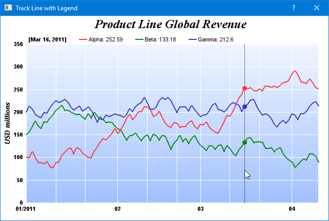

NOTE: For conciseness, some of the following descriptions only mention
QChartViewer (for Qt Widgets applications). Those descriptions apply to
QmlChartViewer (for QML/Qt Quick applications) as well.
This sample program demonstrates a track cursor programmed with the following features:
- A vertical line that follows the mouse cursor on the plot area and snaps to the nearest x data value.
- Small dots that shows the data points at the nearest x data value.
- Dynamically updated legend entries that shows the value of the data points at the nearest x data value.
The code first draws the chart, and sets the track cursor to the right side of the plot area. This ensures the chart initially has a legend that reflects the latest data values. In the
QChartViewer.mouseMovePlotArea signal handler, the track cursor is updated to reflect the mouse position.
The
trackLineLegend method is the routine that draws the track cursor. Its key elements are:
- To draw dynamic contents on the chart, the code obtains the DrawArea object for drawing on the dynamic layer of the chart using BaseChart.initDynamicLayer.
- The nearest x data value is obtained using XYChart.getNearestXValue.
- A vertical line is drawn at the nearest x data value using DrawArea.vline.
- The code then iterates through all data sets in all layers to find all the data points at the nearest x data value. For each of these points, it formats a legend entry for the point, which consists of the data set icon (obtained using DataSet.getLegendIcon), data set name (obtained using DataSet.getDataName), and data value (obtained using DataSet.getValue). The code also gets the point's y position using DataSet.getPosition, and draws a circular dot using DrawArea.circle.
- Finally, the code combines all the legend entries and draws them at the top of the plot area using DrawArea.text.
[Qt Widgets version] qtdemo/tracklegend.cpp
#include <QApplication>
#include "tracklegend.h"
#include <vector>
#include <sstream>
TrackLegend::TrackLegend(QWidget *parent) :
QDialog(parent)
{
setWindowTitle("Track Line with Legend");
// Create the QChartViewer and draw the chart
m_ChartViewer = new QChartViewer(this);
drawChart(m_ChartViewer);
// Set the window to be of the same size as the chart
setFixedSize(m_ChartViewer->width(), m_ChartViewer->height());
// Set up the mouseMovePlotArea handler for drawing the track cursor
connect(m_ChartViewer, SIGNAL(mouseMovePlotArea(QMouseEvent*)),
SLOT(onMouseMovePlotArea(QMouseEvent*)));
}
TrackLegend::~TrackLegend()
{
delete m_ChartViewer->getChart();
}
//
// Draw the chart and display it in the given viewer
//
void TrackLegend::drawChart(QChartViewer *viewer)
{
// Data for the chart as 3 random data series
RanSeries r(127);
DoubleArray data0 = r.getSeries(100, 100, -15, 15);
DoubleArray data1 = r.getSeries(100, 150, -15, 15);
DoubleArray data2 = r.getSeries(100, 200, -15, 15);
DoubleArray timeStamps = r.getDateSeries(100, Chart::chartTime(2011, 1, 1), 86400);
// Create a XYChart object of size 640 x 400 pixels
XYChart *c = new XYChart(640, 400);
// Add a title to the chart using 18 pts Times New Roman Bold Italic font
c->addTitle(" Product Line Global Revenue", "Times New Roman Bold Italic", 18);
// Set the plotarea at (50, 55) with width 70 pixels less than chart width, and height 90 pixels
// less than chart height. Use a vertical gradient from light blue (f0f6ff) to sky blue (a0c0ff)
// as background. Set border to transparent and grid lines to white (ffffff).
c->setPlotArea(50, 55, c->getWidth() - 70, c->getHeight() - 90, c->linearGradientColor(0, 55, 0,
c->getHeight() - 35, 0xf0f6ff, 0xa0c0ff), -1, Chart::Transparent, 0xffffff, 0xffffff);
// Set legend icon style to use line style icon, sized for 8pt font
c->getLegend()->setLineStyleKey();
c->getLegend()->setFontSize(8);
// Set axis label style to 8pts Arial Bold
c->xAxis()->setLabelStyle("Arial Bold", 8);
c->yAxis()->setLabelStyle("Arial Bold", 8);
// Set the axis stem to transparent
c->xAxis()->setColors(Chart::Transparent);
c->yAxis()->setColors(Chart::Transparent);
// Configure x-axis label format
c->xAxis()->setMultiFormat(Chart::StartOfYearFilter(), "{value|mm/yyyy} ",
Chart::StartOfMonthFilter(), "{value|mm}");
// Add axis title using 10pts Arial Bold Italic font
c->yAxis()->setTitle("USD millions", "Arial Bold Italic", 10);
// Add a line layer to the chart using a line width of 2 pixels.
LineLayer *layer = c->addLineLayer();
layer->setLineWidth(2);
// Add 3 data series to the line layer
layer->setXData(timeStamps);
layer->addDataSet(data0, 0xff3333, "Alpha");
layer->addDataSet(data1, 0x008800, "Beta");
layer->addDataSet(data2, 0x3333cc, "Gamma");
// Include track line with legend for the latest data values
trackLineLegend(c, c->getPlotArea()->getRightX());
// Set the chart image to the QChartViewer
viewer->setChart(c);
}
//
// Draw track cursor when mouse is moving over plotarea
//
void TrackLegend::onMouseMovePlotArea(QMouseEvent *)
{
trackLineLegend((XYChart *)m_ChartViewer->getChart(), m_ChartViewer->getPlotAreaMouseX());
m_ChartViewer->updateDisplay();
}
//
// Draw the track line with legend
//
void TrackLegend::trackLineLegend(XYChart *c, int mouseX)
{
// Clear the current dynamic layer and get the DrawArea object to draw on it.
DrawArea *d = c->initDynamicLayer();
// The plot area object
PlotArea *plotArea = c->getPlotArea();
// Get the data x-value that is nearest to the mouse, and find its pixel coordinate.
double xValue = c->getNearestXValue(mouseX);
int xCoor = c->getXCoor(xValue);
// Draw a vertical track line at the x-position
d->vline(plotArea->getTopY(), plotArea->getBottomY(), xCoor, d->dashLineColor(0x000000, 0x0101));
// Container to hold the legend entries
std::vector<std::string> legendEntries;
// Iterate through all layers to build the legend array
for (int i = 0; i < c->getLayerCount(); ++i) {
Layer *layer = c->getLayerByZ(i);
// The data array index of the x-value
int xIndex = layer->getXIndexOf(xValue);
// Iterate through all the data sets in the layer
for (int j = 0; j < layer->getDataSetCount(); ++j) {
DataSet *dataSet = layer->getDataSetByZ(j);
// We are only interested in visible data sets with names
const char *dataName = dataSet->getDataName();
int color = dataSet->getDataColor();
if (dataName && *dataName && (color != (int)Chart::Transparent)) {
// Build the legend entry, consist of the legend icon, name and data value.
double dataValue = dataSet->getValue(xIndex);
std::ostringstream legendEntry;
legendEntry << "<*block*>" << dataSet->getLegendIcon() << " " << dataName << ": " <<
((dataValue == Chart::NoValue) ? "N/A" : c->formatValue(dataValue, "{value|P4}"))
<< "<*/*>";
legendEntries.push_back(legendEntry.str());
// Draw a track dot for data points within the plot area
int yCoor = c->getYCoor(dataSet->getPosition(xIndex), dataSet->getUseYAxis());
if ((yCoor >= plotArea->getTopY()) && (yCoor <= plotArea->getBottomY())) {
d->circle(xCoor, yCoor, 4, 4, color, color);
}
}
}
}
// Create the legend by joining the legend entries
std::ostringstream legendText;
legendText << "<*block,maxWidth=" << plotArea->getWidth() << "*><*block*><*font=Arial Bold*>["
<< c->xAxis()->getFormattedLabel(xValue, "mmm dd, yyyy") << "]<*/*>";
for (int i = ((int)legendEntries.size()) - 1; i >= 0; --i)
legendText << " " << legendEntries[i];
// Display the legend on the top of the plot area
TTFText *t = d->text(legendText.str().c_str(), "Arial", 8);
t->draw(plotArea->getLeftX() + 5, plotArea->getTopY() - 3, 0x000000, Chart::BottomLeft);
t->destroy();
}
[QML/Qt Quick version] qmldemo/tracklegend.qml
import QtQuick
import QtQuick.Window
import QtQuick.Controls
import advsofteng.com 1.0
Window {
title: "Track Line with Legend"
visible: true
modality: Qt.ApplicationModal
width: viewer.width
minimumWidth: viewer.width
maximumWidth: viewer.width
height: viewer.height
minimumHeight: viewer.height
maximumHeight: viewer.height
// The backend implementation of this demo.
TrackLegendDemo { id: demo }
QmlChartViewer {
id: viewer
Component.onCompleted: demo.drawChart(this)
// Update track cursor on mouse move
onMouseMovePlotArea: demo.drawTrackCursor(this, chartMouseX)
}
}
[QML/Qt Quick version] qmldemo/tracklegend.cpp
#include "tracklegend.h"
#include <sstream>
#include <algorithm>
TrackLegend::TrackLegend(QObject *parent) : QObject(parent)
{
m_currentChart = 0;
}
TrackLegend::~TrackLegend()
{
delete m_currentChart;
}
//
// Draw the chart and display it in the given viewer
//
void TrackLegend::drawChart(QmlChartViewer *viewer)
{
// Data for the chart as 3 random data series
RanSeries r(127);
DoubleArray data0 = r.getSeries(100, 100, -15, 15);
DoubleArray data1 = r.getSeries(100, 150, -15, 15);
DoubleArray data2 = r.getSeries(100, 200, -15, 15);
DoubleArray timeStamps = r.getDateSeries(100, Chart::chartTime(2011, 1, 1), 86400);
// Create a XYChart object of size 640 x 400 pixels
XYChart *c = new XYChart(640, 400);
// Add a title to the chart using 18 pts Times New Roman Bold Italic font
c->addTitle(" Product Line Global Revenue", "Times New Roman Bold Italic", 18);
// Set the plotarea at (50, 55) with width 70 pixels less than chart width, and height 90 pixels
// less than chart height. Use a vertical gradient from light blue (f0f6ff) to sky blue (a0c0ff)
// as background. Set border to transparent and grid lines to white (ffffff).
c->setPlotArea(50, 55, c->getWidth() - 70, c->getHeight() - 90, c->linearGradientColor(0, 55, 0,
c->getHeight() - 35, 0xf0f6ff, 0xa0c0ff), -1, Chart::Transparent, 0xffffff, 0xffffff);
// Set legend icon style to use line style icon, sized for 8pt font
c->getLegend()->setLineStyleKey();
c->getLegend()->setFontSize(8);
// Set axis label style to 8pts Arial Bold
c->xAxis()->setLabelStyle("Arial Bold", 8);
c->yAxis()->setLabelStyle("Arial Bold", 8);
// Set the axis stem to transparent
c->xAxis()->setColors(Chart::Transparent);
c->yAxis()->setColors(Chart::Transparent);
// Configure x-axis label format
c->xAxis()->setMultiFormat(Chart::StartOfYearFilter(), "{value|mm/yyyy} ",
Chart::StartOfMonthFilter(), "{value|mm}");
// Add axis title using 10pts Arial Bold Italic font
c->yAxis()->setTitle("USD millions", "Arial Bold Italic", 10);
// Add a line layer to the chart using a line width of 2 pixels.
LineLayer *layer = c->addLineLayer();
layer->setLineWidth(2);
// Add 3 data series to the line layer
layer->setXData(timeStamps);
layer->addDataSet(data0, 0xff3333, "Alpha");
layer->addDataSet(data1, 0x008800, "Beta");
layer->addDataSet(data2, 0x3333cc, "Gamma");
// Include track line with legend for the latest data values
trackLineLegend(c, c->getPlotArea()->getRightX());
// Set the chart image to the QChartViewer
viewer->setChart(m_currentChart = c);}
//
// Draw track cursor when mouse is moving over plotarea
//
void TrackLegend::drawTrackCursor(QmlChartViewer *viewer, int mouseX)
{
trackLineLegend((XYChart *)viewer->getChart(), mouseX);
viewer->updateDisplay();
}
//
// Draw track line with axis labels
//
void TrackLegend::trackLineLegend(XYChart *c, int mouseX)
{
// Clear the current dynamic layer and get the DrawArea object to draw on it.
DrawArea *d = c->initDynamicLayer();
// The plot area object
PlotArea *plotArea = c->getPlotArea();
// Get the data x-value that is nearest to the mouse, and find its pixel coordinate.
double xValue = c->getNearestXValue(mouseX);
int xCoor = c->getXCoor(xValue);
// Draw a vertical track line at the x-position
d->vline(plotArea->getTopY(), plotArea->getBottomY(), xCoor, d->dashLineColor(0x000000, 0x0101));
// Container to hold the legend entries
std::vector<std::string> legendEntries;
// Iterate through all layers to build the legend array
for (int i = 0; i < c->getLayerCount(); ++i) {
Layer *layer = c->getLayerByZ(i);
// The data array index of the x-value
int xIndex = layer->getXIndexOf(xValue);
// Iterate through all the data sets in the layer
for (int j = 0; j < layer->getDataSetCount(); ++j) {
DataSet *dataSet = layer->getDataSetByZ(j);
// We are only interested in visible data sets with names
const char *dataName = dataSet->getDataName();
int color = dataSet->getDataColor();
if (dataName && *dataName && (color != (int)Chart::Transparent)) {
// Build the legend entry, consist of the legend icon, name and data value.
double dataValue = dataSet->getValue(xIndex);
std::ostringstream legendEntry;
legendEntry << "<*block*>" << dataSet->getLegendIcon() << " " << dataName << ": " <<
((dataValue == Chart::NoValue) ? "N/A" : c->formatValue(dataValue, "{value|P4}"))
<< "<*/*>";
legendEntries.push_back(legendEntry.str());
// Draw a track dot for data points within the plot area
int yCoor = c->getYCoor(dataSet->getPosition(xIndex), dataSet->getUseYAxis());
if ((yCoor >= plotArea->getTopY()) && (yCoor <= plotArea->getBottomY())) {
d->circle(xCoor, yCoor, 4, 4, color, color);
}
}
}
}
// Create the legend by joining the legend entries
std::ostringstream legendText;
legendText << "<*block,maxWidth=" << plotArea->getWidth() << "*><*block*><*font=Arial Bold*>["
<< c->xAxis()->getFormattedLabel(xValue, "mmm dd, yyyy") << "]<*/*>";
for (int i = ((int)legendEntries.size()) - 1; i >= 0; --i)
legendText << " " << legendEntries[i];
// Display the legend on the top of the plot area
TTFText *t = d->text(legendText.str().c_str(), "Arial", 8);
t->draw(plotArea->getLeftX() + 5, plotArea->getTopY() - 3, 0x000000, Chart::BottomLeft);
t->destroy();
}
© 2023 Advanced Software Engineering Limited. All rights reserved.